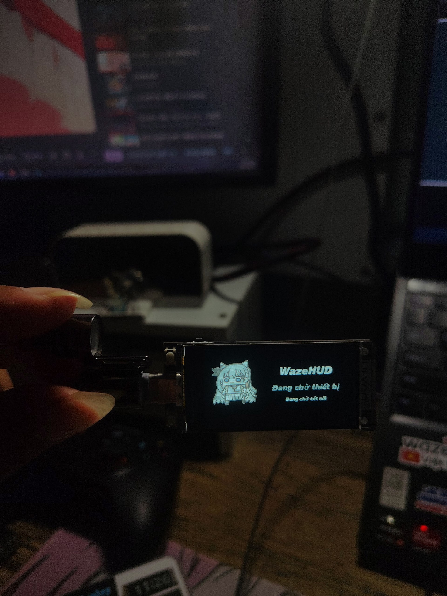

HUD cảnh báo tốc độ Waze
Vấn đề: Khi lái xe trên đường, việc liên tục phải cúi xuống nhìn màn hình điện thoại để canh camera phạt nguội và biển giới hạn tốc độ từ Waze rất dễ làm phân tâm, nguy hiểm và chói mắt dưới trời nắng.
Giải pháp: Chế tạo thiết bị hiển thị kính lái HUD (Head-Up Display) viết bằng C++. Thiết bị kết nối và đồng bộ dữ liệu tốc độ thời gian thực, vị trí camera giám sát từ Waze để phản chiếu trực tiếp lên kính lái, đồng thời kích hoạt buzzer phát tín hiệu cảnh báo tức thì khi chạy quá tốc độ quy định.

Công nghệ sử dụng: C++, Embedded Systems, Bluetooth BLE, Waze Integration.